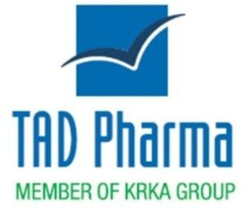

Trade Mark Journal No.2025/033 15 August 2025
WO0000001855099 (3,5,9,10,29,30,42)
Office of origin: Slovenia
Date of International Registration:10 January 2025
Date of designation in the UK:
10 January 2025

The mark contains the colours blue, green and white.
International priority date claimed: 12 July 2024
(Slovenia)
- Class 3
- Detergents and bleaching preparations; cleaning, polishing, scouring and abrasive preparations; soap; perfumery, essential oils, cosmetics, hair lotions; dentifrices.
- Class 5
- Pharmaceutical and veterinary preparations; sanitary preparations for medical purposes; dietetic substances adapted for medical use, baby food; plasters, bandages for dressings; dental fillings and impression materials for dental purposes; disinfectants; preparations for destroying vermin; fungicides, herbicides; food supplements, herbal food supplements; food supplements for humans; food supplements not for medical use, food supplements in powder form, dietetic preparations not for medical purposes.
- Class 9
- Scientific, nautical, surveying, photographic, cinematographic, optical, weighing, measuring, signalling, checking (supervision), life-saving and teaching apparatus and instruments; apparatus and instruments for conducting, switching, transforming, storing, regulating or controlling electricity; apparatus for recording, transmission or reproduction of sound and images; magnetic recording media, discs; mechanisms for coin-operated machines; cash registers, calculating machines, data processing equipment and computers; fire-fighting equipment.
- Class 10
- Surgical, medical, dental and veterinary instruments and apparatus, artificial limbs, eyes and teeth; orthopaedic articles; surgical suture materials.
- Class 29
- Meat, fish, poultry and game; meat extracts; preserved, dried and cooked fruits and vegetables; jellies, jams, compotes; eggs, milk and milk products; edible oils and fats.
- Class 30
- Coffee, tea, cocoa, sugar, rice, tapioca, sago, artificial coffee; flour and preparations made from cereals, bread, pastry and confectionery, ices; honey, treacle; yeast, baking-powder; salt, mustard; vinegar, sauces (condiments); spices; ice.
- Class 42
- Scientific and technological services and research and related design services; industrial analysis and research services; design and development of computer hardware and software.
KRKA, tovarna zdravil, d.d., Novo mesto